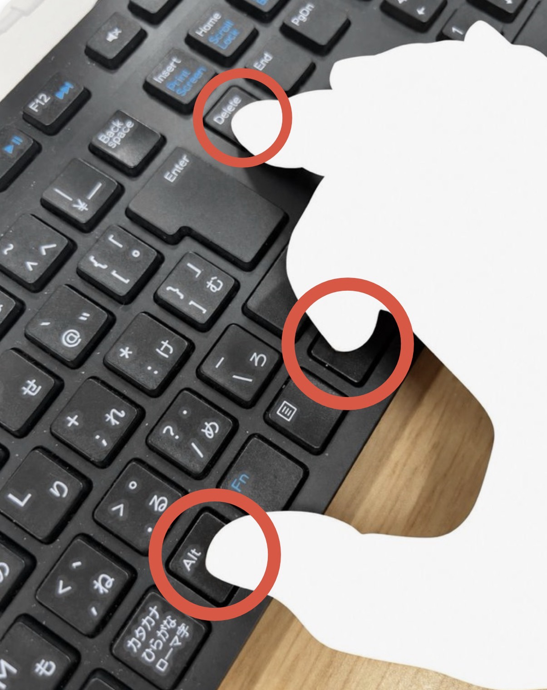

Kussoon ／ 💡 工夫・アイデア
Ctrl＋Alt＋Deleteを右手一本で押す方法
Windowsでおなじみの Ctrl＋Alt＋Delete。3つのキーが離れていて、両手を使って押すことも多い組み合わせです。ところが、キーボードの右側を使うと、右手だけで押せることに気づきました。
ビル・ゲイツ氏も後悔したキー操作？
2017年の『Esquire（エスクァイア）』の記事では、ビル・ゲイツ氏がこのキーの組み合わせを後悔していたことが紹介されています。本来は1つのキーで操作できるようにしたかった、という趣旨の発言も取り上げられています。
確かに、左側の Ctrl と Alt に、右上の Delete を組み合わせようとすると、両手が必要になります。
でも、右側にあるキーを利用すればどうでしょうか。
右手の3本の指で押してみました
下の写真をご覧ください。使うのは右手の親指・人差し指・中指だけです。

- 親指で右側の Alt キーを押します。
- 人差し指で右側の Ctrl キーを押します。
- 中指を上に伸ばして Delete キーを押します。
つまり、右手を大きく開き、3つのキーを同時に押すだけ。慣れると、左手を使わずに操作できます。
どのキーボードでもできる？
写真は日本語配列のキーボードです。右側に Ctrl と Alt があり、Delete が届く位置にあることがポイントです。
ただし、ノートパソコンや小型キーボード、機種によってはキーの配置が異なるため、同じ方法では押せない場合があります。また、手の大きさによっても押しやすさは変わります。
※ Ctrl＋Alt＋Delete はWindowsのセキュリティ画面を開く操作などに使われます。実際に試す場合は、作業中の操作に支障がないタイミングでお試しください。
小さな発見ですが……
特別な道具も、キーボードの設定変更も必要ありません。日常のちょっとした「押し方の工夫」です。
以前から知られている方法かもしれませんが、自分で気づくと少しうれしいものですね。興味があれば、ぜひお手元のキーボードで試してみてください。
参考記事
『Esquire』「ビル・ゲイツ、「Ctrl-Alt-Delete」の組み合わせは最大の痛恨事であった」（2017年9月27日公開）